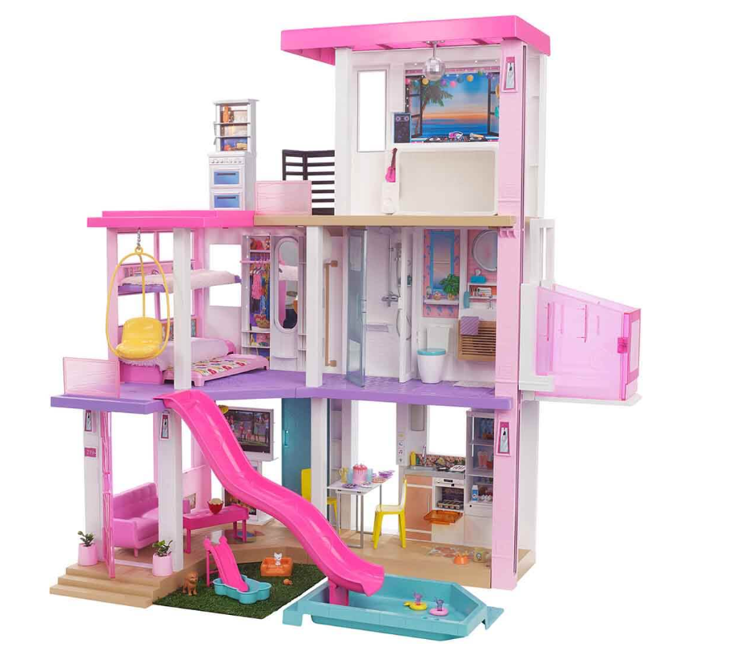
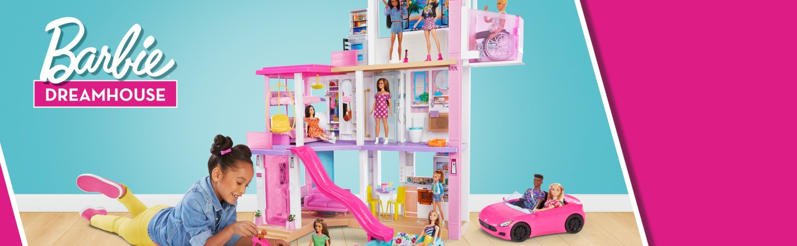
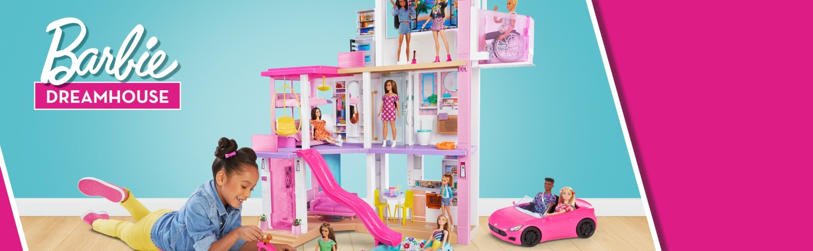

Barbie's Dream House GRG93
.jpeg)
When girls step into Barbie's Dream House, they will also discover an
endless number of storytelling possibilities!
Open the doors and start customizing the living space. After arranging
the house the way you want, create different
stories with three songs, two sounds and customizable lights! Then,
transform items to increase the dose of fun.
How? You can turn the barbecue into a dessert buffet, and the
entertainment area into a playground for pets.
Moreover, you can lower the two-storey bunk bed from the wall and
welcome your guests! To cool off a little on
a hot day, fill the pool with water, sunbathe on the balcony and
terrace, organize game parties where your animal friends can have fun
in the pool and slide. more than 75 storytelling accessories! Animate
all your stories with Barbie in this house with realistic textures and
details. Realistic sound effects, 2 different sounds, 3 songs, 8 light
colors and 4 light settings with day mode, night mode, party mode and
mode lighting inspire fun stories. The balcony on the third floor and
the terrace on the roof provide entertainment for spending time
outdoors. take everyone to the terrace using the elevator, which can
carry 4 dolls or Barbie in a wheelchair. There are fun details that
can be transformed in every corner of the house. You can turn the
barbecue into a dessert buffet, and the entertainment area into a
playground for pets. Moreover, you can lower the two-storey bunk bed
from the wall and welcome your guests!
.jpeg) 
